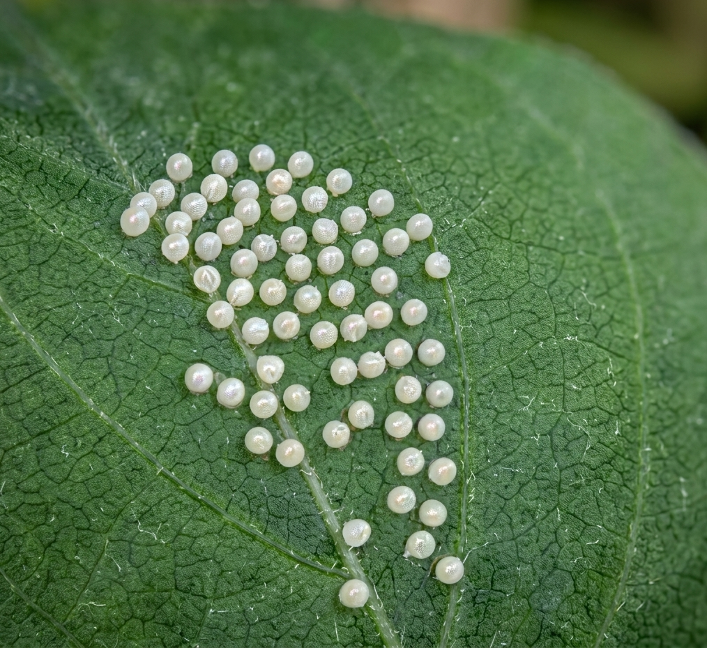
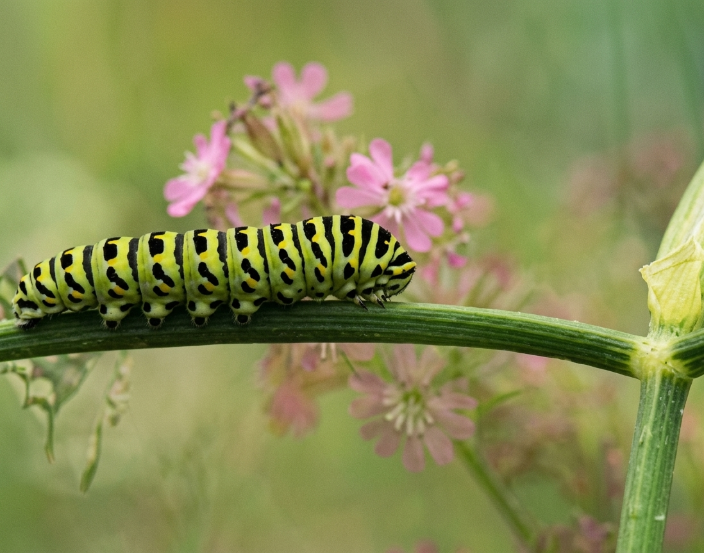

A butterfly's days
Let's learn about a butterfly's life cycle
1.the ovum stage

- The Chorion: The tough outer shell is not made of calcium like a bird's egg, but rather a resilient protein layer called the chorion. It features sculpted geometric ridges that distribute external pressure evenly to prevent crushing.
- Waterproofing: The inside of the shell is lined with an incredibly thin layer of wax. This barrier seals moisture inside, preventing the delicate embryo from drying out (desiccation) during hot or windy days.
2.The larva stage

- The Silk Button: Before a caterpillar molts or rests, it uses its spinneret to spin a small pad of silk onto a twig or leaf. It then hooks its rear prolegs into this "button" so it does not fall off the plant if a strong gust of wind hits.
- Life-Saving Drop: If a predator attacks, many larvae will drop off the leaf instantly. However, they leave a trailing line of silk attached to the plant, allowing them to climb back up safely like a spider once the danger passes.
3.The pupa stage

- The Cremaster: To stay securely attached to a twig or leaf while dangling upside down, the pupa uses a specialized, microscopic spike at its rear tip called a cremaster. This structure is covered in tiny hooks that catch onto silk pads spun by the caterpillar, acting like natural Velcro.
- Chrysalis vs. Cocoon: A chrysalis is not a cocoon. A cocoon is a silk jacket spun by a moth larva around itself. A chrysalis is the hard, protective skin of the pupa itself, exposed directly to the elements.
4.Adult stage

- Androconial Scales: On many male adult butterflies (including the Monarch), specialized patches of scales called androconia run along the wing veins. These scales connect to interior glands that produce and release concentrated courtship pheromones into the air to attract females.
- Structural vs. Pigmentary Color: Butterfly wings obtain colors in two distinct ways. Warm tones (blacks, browns, oranges) come from physical chemical pigments like melanin. Metallic blues, greens, and iridescence come from structural coloration, where microscopic, tree-like shapes on the scales physically split and bounce light waves.
Did you know? To survive a 3,000-mile migration, the final autumn generation of Monarch butterflies alters its own genetics to enter a state of suspended aging called diapause, extending their normal 4-week lifespan to an incredible 9 months so they can survive the winter and fly back north in the spring.
to learn more:
Go here